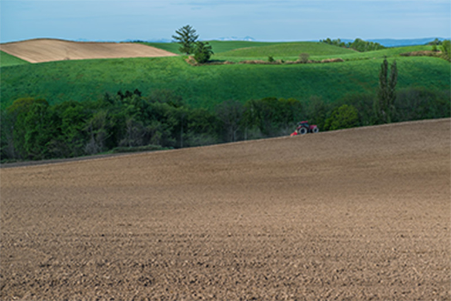

ABOUT
チーズアカデミーについて
チーズアカデミーは、チーズ職人養成学校です。チーズの素晴らしさを、自給自足を通じて、できるだけ多くの人に知っていただきたい。 そして、食卓にはいつもチーズがあった、あの頃の当たり前をこの手で取り戻したい。そんな思いから、チーズ職人養成学校「チーズアカデミーTOKYO」は歩みを始めています。 卒業後、チーズ自給自足のバックアップはもちろんのこと、チーズ職人への就職・転職もサポートします。




COURSE
カリキュラム
多くの専門家や現役チーズ職人のアドバイスのもと、カリキュラムが作られました。

本格的な農園を使った実地研修
チーズアカデミーでは、本格的な農園を使った実地研修を行うことができ ます。プロとして活躍するチーズ職人も使用するような、広大で環境も整っ た農園を余すところなく使い、卒業時には本格的なチーズを自分の力で作 れる実践力の養成を目指します。
必要な知識もしっかりと取得
チーズ作りには、しっかりとした食に関する知識が欠かせません。チーズ アカデミーでは一流講師陣によるチーズ作りに必要ないろはを余すところ なく学べます。チーズそのものでなく、栄養学全般を学ぶことも可能です ので、チーズ以外への展開も夢ではないでしょう。


卒業制作はティスティング審査あり
チーズアカデミーでは最後の2ヶ月間で卒業制作を実施。卒業制作として、 チーズ作りを実際に行います。卒業後、一般参加によるティスティング審査が あるため、作り手の目線だけでなく、消費者の目線から、卒業制作作品と してのチーズを、しっかりと評価いただくことができます。
NEWS
ニュース
卒業生の活躍を紹介！
チーズアカデミー卒業生のコスゲさんによる厳選した高級チーズを使用した話題のピザ屋「Kosuge Pizza」が渋谷でオープン！
2019.1.12
卒業生の活躍を紹介！
チーズアカデミー卒業生のコスゲさんによる厳選した高級チーズを使用した話題のピザ屋「Kosuge Pizza」が渋谷でオープン！
2019.1.12
卒業生の活躍を紹介！
チーズアカデミー卒業生のコスゲさんによる厳選した高級チーズを使用した話題のピザ屋「Kosuge Pizza」が渋谷でオープン！
2019.1.12